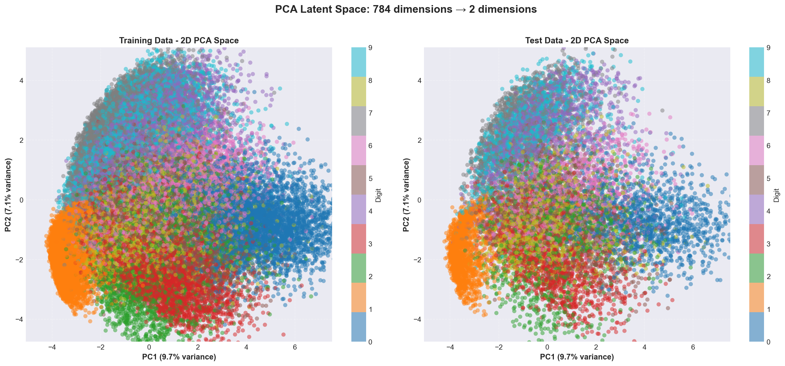

Haute dimension
Chaque image MNIST a 28×28 pixels, soit 784 variables à traiter simultanément.
Une présentation visuelle, simple et moderne pour comprendre pourquoi PCA existe, ce qu’elle optimise, comment elle s’écrit mathématiquement et comment elle se compare à LDA/QDA.
Exemple simple : PCA projette les images sur quelques axes pour garder la structure globale avec moins de dimensions.
Chaque image MNIST a 28×28 pixels, soit 784 variables à traiter simultanément.
Plus de variables implique plus de calcul, plus de mémoire et plus de bruit potentiel.
Sans projection, il est difficile d'interpréter visuellement un espace à 784 dimensions.
La PCA a été pensée pour un problème purement géométrique : résumer un nuage de points en moins de dimensions sans perdre sa forme globale ni sa dispersion.
La PCA repose sur deux idées simples : maximiser la variance projetée et trouver ces axes grâce à la covariance.
On retire la moyenne pour travailler autour de zéro.
La covariance décrit comment les variables bougent ensemble.
Les plus grandes valeurs propres donnent les directions les plus informatives.
Les points sont étalés dans plusieurs directions.
On cherche la direction qui maximise la variance.
On réduit la dimension tout en gardant l'essentiel.
from sklearn.decomposition import PCA
pca = PCA(n_components=2)
X_2d = pca.fit_transform(X_scaled)
print(pca.explained_variance_ratio_)X_2d = pca.fit_transform(X_scaled)L'utilisation de X_scaled est cruciale : la standardisation évite qu'une partie des pixels écrase le calcul de variance, et rend PCA plus juste.
pca = PCA(n_components=2)Le choix n_components=2 est adapté à l'objectif ici : obtenir une visualisation graphique en 2D (scatter plot) claire.
print(pca.explained_variance_ratio_)Cette ligne apporte la justification scientifique : elle mesure la quantité d'information conservée par la projection.

Commentaire : la figure montre zones denses, chevauchements de classes et variance capturée sur PC1/PC2.
from sklearn.decomposition import PCA
pca = PCA(n_components=0.95)
X_reduced = pca.fit_transform(X_scaled)
print(f"Nombre d'axes retenus : {pca.n_components_}")pca = PCA(n_components=0.95)Le paramètre 0.95 demande à Scikit-Learn de choisir automatiquement le nombre minimal d'axes qui conservent 95% de la variance totale.
X_reduced = pca.fit_transform(X_scaled)La projection se fait sur les axes retenus automatiquement, ce qui compresse le jeu de données tout en gardant le signal principal.
print(f"Nombre d'axes retenus : {pca.n_components_}")Cette sortie indique le compromis obtenu : on veut réduire fortement la dimension, mais sans dépasser la perte d'information fixée au départ.
Une projection claire peut révéler la géométrie cachée des données.
Origine bayésienne / probabiliste : "Je cherche à modéliser des cloches de probabilités pour tracer une frontière qui sépare mes classes."
Origine géométrique / algébrique : "Je m'en fiche des classes. Je regarde la forme globale de mon nuage de points et je cherche l'axe de rotation qui préserve le plus d'étalement (de variance)."
PCA identifie des axes orthogonaux qui capturent la plus grande part de variance. Utilisez-le pour résumer la forme globale du nuage, pas pour classifier.
Standardisez les variables avant PCA, regardez `explained_variance_ratio_` pour choisir le nombre de composantes, et testez la reconstruction si la compression est visée.
PCA est linéaire et insensible aux labels : elle ne capture pas les structures non-linéaires ni les différences subtiles entre classes.